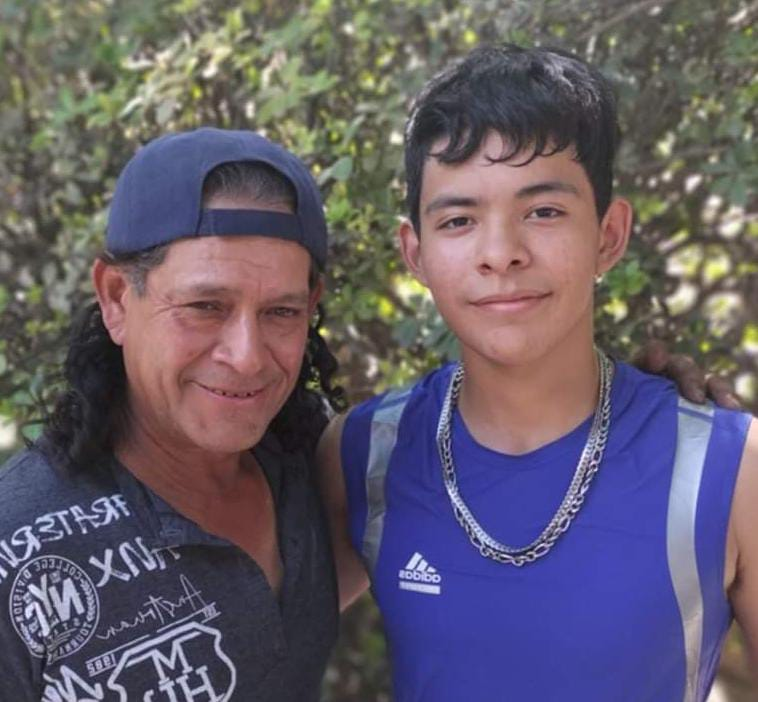

Somos una organización comprometida con la conciencia social y la acción comunitaria. En Acciones Nacidas del Corazón trabajamos para llevar apoyo real a quienes más lo necesitan, promoviendo la solidaridad como motor de cambio. Nuestra labor se centra en la difusión de programas sociales, la promoción de servicios comunitarios y la canalización de reportes ciudadanos, para atender problemáticas como falta de alimento, atención médica, apoyo educativo, limpieza comunitaria y rehabilitación de espacios públicos. Actuamos como puente entre las comunidades y las instituciones, organizaciones y personas que quieren ayudar, para que juntos podamos construir entornos más dignos, seguros y humanos. Creemos en el poder de las acciones que nacen del corazón, porque es ahí donde comienza el verdadero cambio.
Valeria Paredes

Líder del proyecto
Roy Espinosa
Creador y desarrollador de la página
Andryk Nicolas
Documentador del proyecto
En Acciones Nacidas del Corazón creemos que cada persona merece ser escuchada, acompañada y apoyada en los momentos más difíciles. Nuestra misión es ser ese punto de encuentro entre quienes enfrentan desafíos urgentes y quienes desean marcar una diferencia genuina. Nos dedicamos a construir puentes humanos donde antes solo había barreras, conectando necesidades reales con manos dispuestas a ayudar.